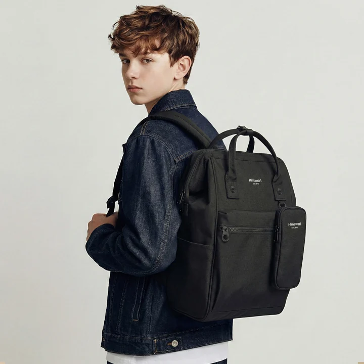

어깨끈을 맞추기 전에 짐의 자리부터
백팩을 멨을 때 한쪽 어깨가 더 당기는 느낌이 들면 먼저 그쪽 끈을 풀고 싶어집니다. 그런데 끈의 길이는 그대로인데 짐의 자리가 달라졌을 수도 있습니다. 파일과 책은 가운데에 두었더라도 두꺼운 충전기 파우치가 한쪽 아래로 이동해 있을 수 있습니다. 조절을 시작하기 전에 가방을 내려놓고 무엇이 어느 면에 있는지 보는 이유입니다. 평소의 짐과 옷을 기준으로 삼아야 끈을 바꾼 뒤의 느낌도 비교할 수 있습니다.
끈의 조절 방식과 남는 길이를 정리하는 방법은 해당 제품 설명을 따릅니다. 조절 가능한 부위와 고정된 연결부를 구분하고, 잘 움직이지 않는 부분을 힘으로 당기거나 임의로 자르지는 않습니다. 그 범위를 알아두었다면 다음부터는 짐의 자리와 옷차림을 구체적으로 비교할 수 있습니다. 양쪽 끈이 같은 길이인지에만 집중하기보다 비틀린 면이 있는지, 가방을 올린 뒤 어깨에 어느 방향으로 놓이는지를 함께 봅니다. 한쪽 끈만 접힌 상태라면 먼저 자연스러운 방향으로 놓아볼 수 있습니다.
같은 짐을 옆과 가운데에 두는 비교
책 한 권과 파일, 두꺼운 파우치를 담은 상태를 가정해봅니다. 첫 번째 배치에서는 파우치를 왼쪽 아래에 두고, 두 번째에서는 가방 구조가 허용하는 가운데 자리로 옮깁니다. 물건을 추가하거나 빼지 않고 끈도 그대로 둔 채 두 상태를 메어보는 것입니다. 한쪽으로 움직이는 느낌이 달라졌다면 끈의 길이를 바꾸기 전에 내용물의 자리를 정할 이유가 생깁니다. 두 상태가 같다면 다음에 끈을 살필 수 있습니다. 이 비교는 특정 제품의 결과를 예측하는 시험이 아니라 무엇을 바꾸었는지 구분하는 방법입니다.
비교하는 동안에는 파우치의 겉모양도 봅니다. 가운데로 옮겼더니 파일 모서리를 누르거나 기기를 꺼내는 길을 막는다면 다른 자리가 필요합니다. 한쪽 느낌만 줄이려고 나머지 사용 동작을 어렵게 만들 필요는 없습니다. 작은 물건은 한 묶음으로 정리하고 큰 파일은 자연스럽게 놓이는 면을 남기는 식으로 다시 구성할 수 있습니다. 짐의 자리와 꺼낼 순서가 정해진 다음 끈을 조절하면 다음 외출에서도 같은 조건으로 시작하기 쉽습니다.
내용물을 정리한 뒤에는 양쪽 어깨에 메고 작은 범위씩 길이를 바꾸어봅니다. 한쪽을 끝까지 당긴 뒤 반대쪽을 맞추려 하면 어느 변화가 편했는지 구분하기 어렵습니다. 한 번 바꾼 뒤 서 있는 위치와 걷는 동작을 보고 그다음 변화를 정합니다. 몸에 가까워졌어도 팔을 움직이거나 가방을 내리는 동작이 불편해졌다면 계속 줄일 이유는 없습니다. 본인이 자주 하는 동작에서 어느 면이 닿는지를 기준으로 남길 길이를 고르면 됩니다.
이번 착용 비교의 제품 예시로 Himawari No.1027 제품 정보를 참고할 수 있습니다. 자신의 책과 파우치를 실제로 담고, 제품의 조절 가능한 부위를 사용해 메고 내리는 순서를 이어봅니다. 사진 속 사람과 같은 높이를 만들기보다 현재 짐과 옷에서 편한 상태를 찾는 방식입니다. 가방을 몸 앞으로 가져와 필기구를 꺼냈다가 다시 메는 동작까지 해보면, 서 있을 때 고른 길이가 생활 속에서도 이어질지 판단할 수 있습니다.

셔츠에서 두꺼운 코트로 바뀐 날
봄 셔츠를 입고 맞춘 끈을 겨울 코트에서도 그대로 쓴다고 가정해봅니다. 짐은 같아도 어깨에 닿는 옷의 두께와 옷깃이 달라집니다. 이때는 서둘러 한쪽만 풀기보다 양쪽 끈이 코트 위에 어떻게 놓였는지 봅니다. 필요하면 안내된 범위에서 여유를 바꾸고 가방을 다시 메어볼 수 있습니다. 코트의 높은 옷깃과 머리카락이 끈 아래에 들어갔다면 그 부분을 먼저 정리합니다. 옷이 바뀐 날의 조절은 이전 길이를 잊는 일이 아니라 달라진 조건을 다시 읽는 과정입니다.
겉옷을 벗는 장소에서도 동작이 이어집니다. 회사에 도착해 코트를 벗고 백팩을 다시 메어야 한다면 처음의 끈 상태가 셔츠에서도 편한지 볼 수 있습니다. 하루에 두 옷차림을 오갈 경우에는 각각에서 불편한 부분을 알아두고 필요한 때만 조정하면 됩니다. 가방을 메고 옷을 억지로 빼기보다 가방을 먼저 내려놓고 옷을 정리하는 순서도 생각할 수 있습니다. 물건을 잠시 둘 자리와 다시 가져갈 개수가 늘었는지도 이때 함께 살펴보면 됩니다.
같은 백팩을 다른 사람이 쓴 뒤
가족이 같은 백팩을 번갈아 쓴다면 지난번에 맞췄던 길이가 달라져 있을 수 있습니다. 다른 사람이 썼다는 사실을 안다면 자신의 짐을 담고 메어본 뒤 시작하는 편이 좋습니다. 길이를 맞추기 전에 기존 물건이 남아 있는지도 봅니다. 남은 물건 때문에 한쪽이 다르게 느껴지는데 끈만 바꾸면 원래 짐을 넣은 다음 다시 조절해야 할 수 있습니다. 개인별로 가져갈 묶음과 끈의 상태를 나누어 생각하면 누구의 가방인지 바뀌는 순간에도 위치를 찾기 쉽습니다.
익숙한 상태를 기록하고 싶다면 자신의 짐과 옷차림을 함께 적을 수 있습니다. 같은 책과 파우치를 담은 날 어떤 위치가 편했는지 알아두는 정도면 됩니다. 길이 하나를 모든 사람과 모든 계절의 기준으로 만들 필요는 없습니다. 다른 사람에게는 같은 숫자가 다르게 놓일 수 있으므로 본인이 직접 메고 내리는 동작이 남아야 합니다. 제품의 조절 부위가 정상적으로 움직이지 않거나 반복해서 불편한 부분이 남는 경우에는 현재 상태와 사용 조건을 설명해 상담할 수 있습니다.
출발할 때에는 가방의 여밈을 닫고 남은 끈과 개인 장식이 주변 물건에 걸리지 않는지 봅니다. 긴 머리를 정리하고 가방을 한 번 내렸다가 다시 메어보면 자주 쓰는 동작의 순서도 남습니다. 짐을 늘리거나 겉옷을 바꾼 날에는 앞서 해본 비교 가운데 달라진 조건만 다시 볼 수 있습니다. 늘 같은 길이를 지키는 것보다 무엇을 바꿨고 어떤 동작이 편했는지 아는 편이 다음 조정에도 도움이 됩니다. 가방 안의 자리와 어깨끈의 놓임이 함께 이어지는 상태로 출발하면 됩니다.